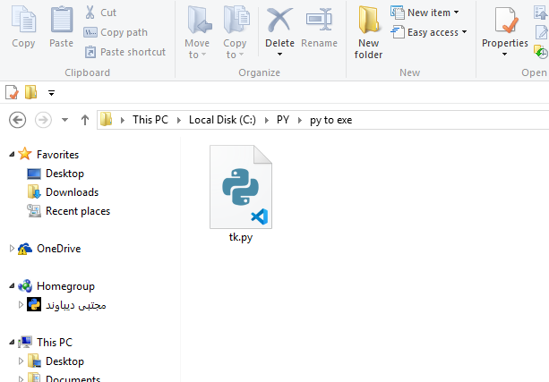
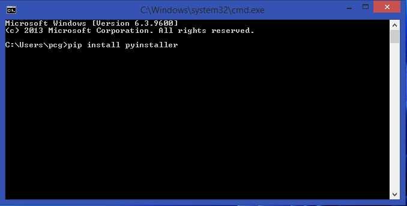
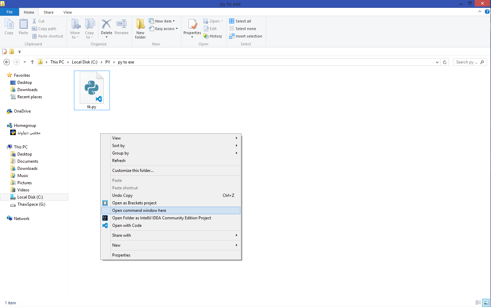
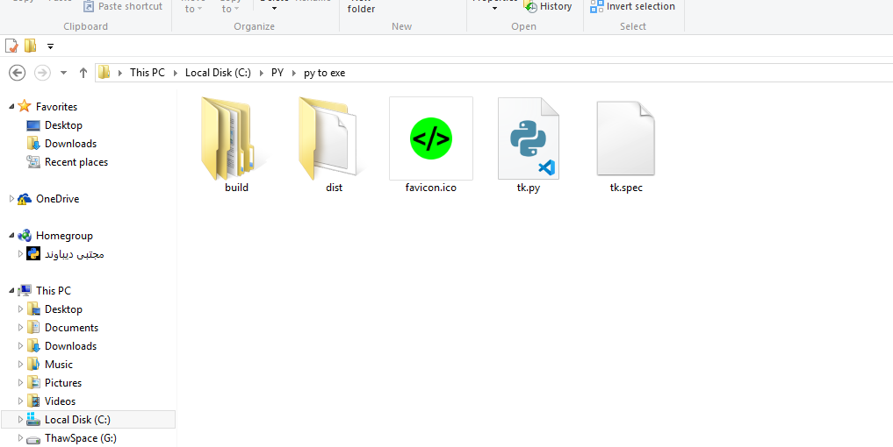
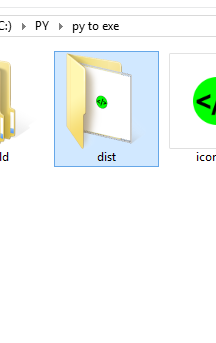

حتما خیلی وقت ها براتون پیش اومده که یه فایل پایتونی بنویسید و
بخواین اونو توی سیستم یه نفر دیگه اجرا کنید. ممنکنه مشکلای مختلفی
پیش بیاد. مثلا شاید طرف پایتون نداشته باشه یا اینکه نسخه پایتونش با
شما فرق داشته باشه ,یا کتابخونه هایی که شما استفاده کردید رو نداشته باشه
یا شاید بخواین از کدتون برنامه خروجی بگیرین و خیلی چیزای دیگه.
به هر حال ما امروز اینجا هستیم تا بهتون یاد بدیم چطور این کارو بکنید.
با ما همراه باشید
خب اول از همه به یه فایل پایتونی با پسوند py. نیاز داریم.

برای اینکار به کتابخونه pyinstaller نیاز داریم. برای نصب وارد cmd ویندوز میشیم.

و کد pip instal pyinstaller رو وارد ترمینال میکنیم. و منتظر میمونیم تا کتابخونه کامل نصب بشه.
و با پیغام successfully installed pyinstaller مواجه بشیم.
وارد پوشه کد میشیم.
شیفت رو نگه میداریم .راست کلیک میکنیم.
روی گزینه open command window here کلیک میکنیم.

تو سی ام دی باز شده باید کد تبدیل فایل رو بزنیم.
pyinstaller
--onefile
-w
-i
icon.ico
tk.py
کپی کد:
اگه ماوس رو روی کلمه ها نگه دارید توضیحاتش رو نوشتم.

بعد از اتمام فرآیند تبدیل فایل شما تو پوشه ی دیسته و قابل اجراست.
